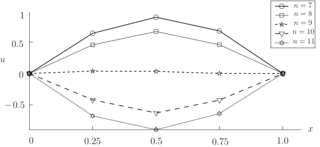

Long description: waveexample2

Alt text: A line graph illustrating multiple curves, labeled with different values of 'n', showing how a function u changes with x from 0 to 1.
This description was generated by AI and has not been verified by a human. If you spot an error, please use the feedback link below.
- The graph displays several curves, each representing a value of 'n' ranging from 7 to 11, plotted against the horizontal axis labeled 'x' and the vertical axis labeled 'u'.
- All curves start and end at the point where 'u' is zero when 'x' is zero and when 'x' is one.
- For the lowest values of 'n' (e.g., 'n' = 7, represented by a solid line with circles), the curve forms an upward-opening arch, peaking around 'u' = 1.0 when 'x' is 0.5.
- As the value of 'n' increases (moving towards 'n' = 11, represented by a dashed line with triangles), the peak height of the curve decreases, and the trough depth increases.
- Specifically, the curve for 'n' = 10 (dashed line with triangles) shows a minimum value around 'u' = -0.5 when 'x' is 0.5.
- The curve for 'n' = 11 (dotted line with open triangles) dips the lowest, reaching a minimum value slightly below -0.5 when 'x' is 0.5.
- In general, as 'n' increases from 7 to 11, the shape of the curve maintains an arch-like form, but the vertical excursion moves closer to the x-axis, with the function becoming more negative in the center region.